EXPLORE PMA
Quickly navigate through the academy information.
ABOUT PMA
Learn about the academy, its mission, and purpose.
EXPLORE →ADMISSION
Learn about eligibility and the admission process.
EXPLORE →EXAMINATION
Understand the PMA Entrance Examination and its coverage.
EXPLORE →CADET LIFE
Discover what life and training are like inside the Academy.
EXPLORE →CORE VALUES
Learn the values expected from future military officers.
EXPLORE →
PREPARATION
Get ready through review materials and preparation guides.
EXPLORE →About the Philippine Military Academy
The Premier Institution for Military Leadership
The Philippine Military Academy (PMA) is the premier military institution of the Philippines responsible for educating, training, and developing future officers of the Armed Forces of the Philippines. Located at Fort Del Pilar in Baguio City, the Academy develops cadets through character development, academic education, military leadership, and physical development.
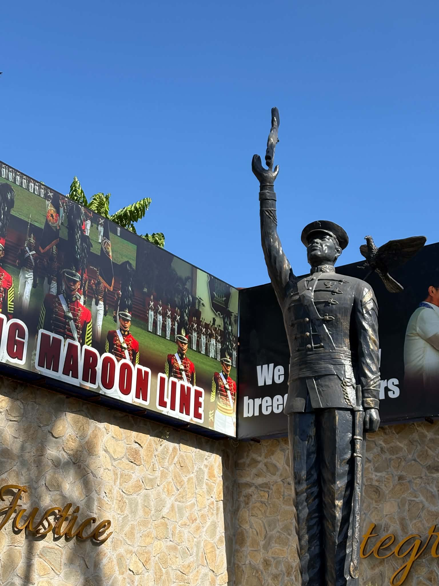
Mission & Vision
Vision: A World-Class Armed Forces and a Source of National Pride.
Mission: To instruct, train and develop the cadets so that each graduate shall possess the character, the broad and basic military skills, and the education essential to the successful pursuit of a progressive military career.
PMA Core Values
Honor: Upholding truth, integrity, and ethical conduct in all actions and responsibilities.
Service: Dedication to selfless service to the country, the Armed Forces, and the Filipino people.
Patriotism: Demonstrating love of country and commitment to protecting the nation.
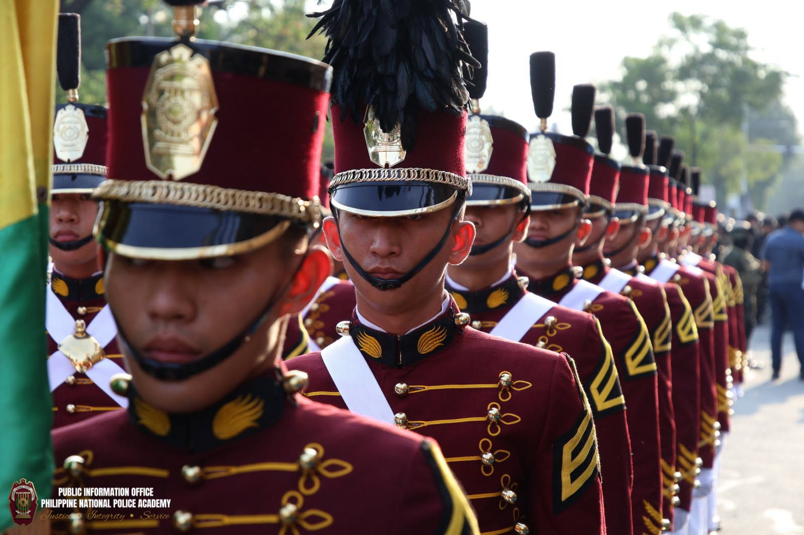
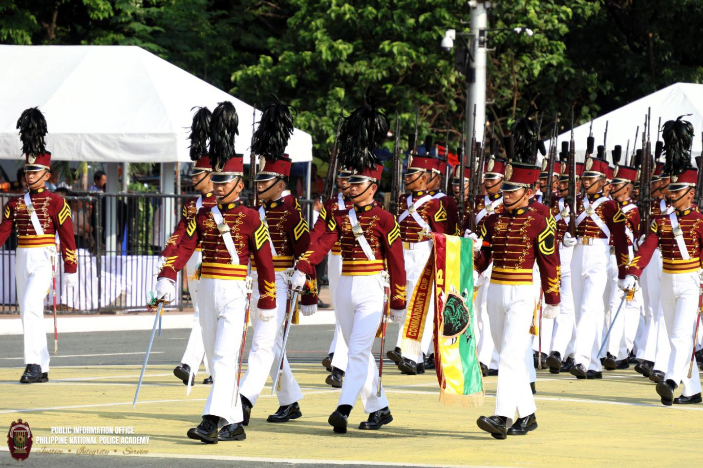
Key Highlights
Education: Cadets receive free college education through the Academy's well-rounded academic program.
Career Path: Graduates pursue careers as commissioned officers in the Armed Forces of the Philippines, serving in the Army, Navy, or Air Force.
Training Philosophy: PMA develops cadets through Character, Academics, Military Skills, and Physical Fitness (CAMP).
PMA Cadet Admission
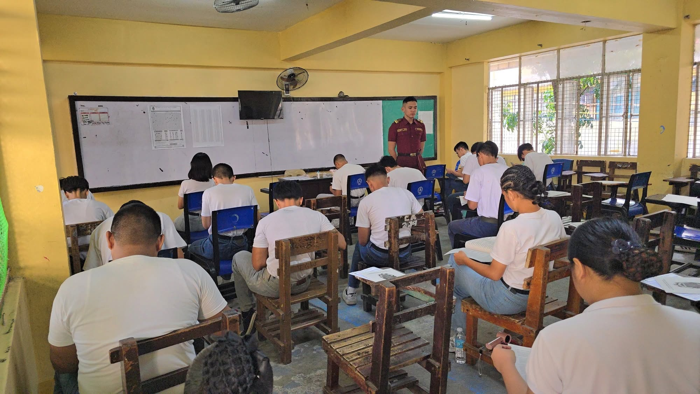
The Philippine Military Academy offers a fully supported cadetship program that provides free college education, military training, accommodations, and allowances. Cadets undergo academic, military, physical, and character development as preparation for a career as officers of the Armed Forces of the Philippines.
Qualifications & Eligibility
Citizenship
Must be a Filipino citizen who meets the citizenship requirements prescribed by PMA.
Physical Standards
Physically fit and must meet the PMA height requirement of not less than 5'0" and not more than 6'4" for both male and female applicants.
Age & Civil Status
Must be at least 17 years old and not more than 22 years old on the prescribed admission date; must be single, never married, and without a legal obligation to support a child or children.
Academic Record
At least a Grade 12 or High School graduate with a general average of 85% or higher.
Character & Examination
Must be of good moral character, have no administrative or criminal case, and pass the PMA Entrance Examination and succeeding selection requirements.
Application Requirements & Process
1. Prepare Required Documents
PSA Birth Certificate
Form 137 / Form 138 / Report Card
2x2 ID Photo
Valid ID
2. Submit Your Application
Apply through the official PMA Cadet Application system or through the Office of the Cadet Recruitment and Admission (OCRA).
PMA Application3. Selection Process
Step 1: Application and qualification screening
Step 2: PMA Entrance Examination
Step 3: Physical, medical, and aptitude-related evaluations
Step 4: Final selection and admission processing
PMA Entrance Examination Overview
Reviewer Topics
Mathematics
Algebra
Geometry
Basic Mathematical Operations
Word Problems
Mathematical Reasoning
Etc... See More
ENGLISH
Grammar
Composition
Reading Comprehension
Vocabulary
Sentence Structure
Etc... See More
Abstract Reasoning
Verbal Reasoning
Numerical Reasoning
Pattern Analysis
Sequences
Logical Relationships
Problem Solving
Life Inside the Academy
1. What to Expect in Cadet Life
The PMA Cadetship Program is a residential military education and training program that combines college education with military leadership, physical development, and character formation. Cadets live and train within a structured environment designed to prepare them for service as future officers of the Armed Forces of the Philippines.
Military Discipline: Cadet life emphasizes discipline, responsibility, leadership, teamwork, ethical conduct, and adherence to military standards.
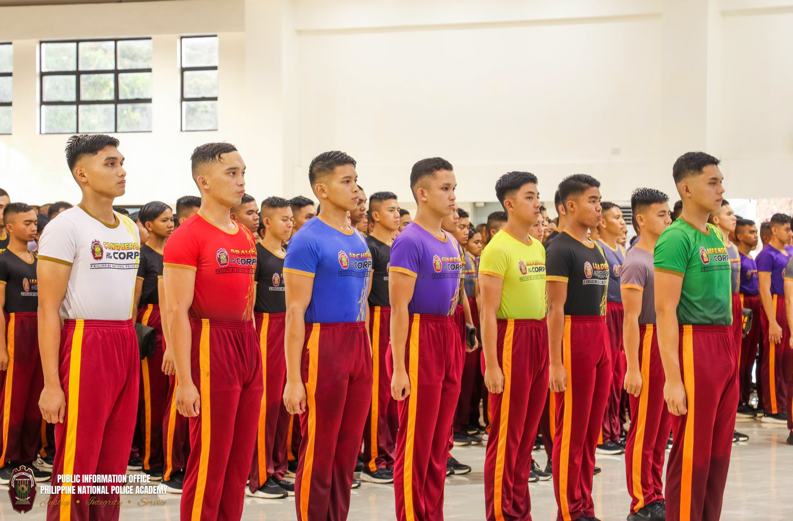
Structured Daily Life: Cadets participate in academic classes, military instruction, physical fitness activities, formations, drills, ceremonies, and other Academy activities throughout their training.
Camaraderie & Teamwork: Cadets train and study alongside their fellow cadets while participating in organizations, sports, competitions, and other activities that develop teamwork and leadership.
A Demanding Training Environment: The Academy combines academics, military skills, physical fitness, and character development to prepare cadets for the responsibilities of military service.
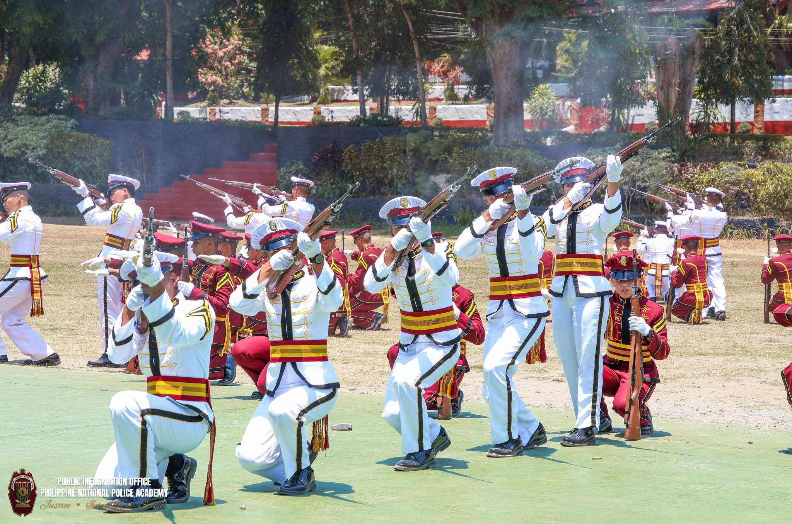
2. Key Pillars of Cadet Development
PMA develops cadets through four major areas commonly represented by the acronym CAMP: Character, Academics, Military Skills, and Physical Fitness.
Character Development: Cadets develop moral character, ethical responsibility, leadership qualities, and adherence to the PMA Honor Code.
Academic Development: Cadets receive a broad and balanced college education leading to a Bachelor of Science degree.
Military Development: Cadets receive military education and training that develop basic military skills, leadership, discipline, and preparation for their future service in the AFP.
Physical Development: Physical fitness, sports, athletics, and conditioning help prepare cadets for the physical demands of military service.
3. Milestones & Traditions
Cadet Reception & Initial Training: New cadets begin their Academy journey by adapting to the military environment, developing discipline, and undergoing initial military training.
Cadet Training & Development: Throughout their stay, cadets progress through academic, military, physical, and character development programs while participating in Academy traditions and activities.
Graduation: Cadets who satisfactorily complete the requirements of the Academy graduate with a Bachelor of Science degree and proceed to their careers as commissioned officers in the Armed Forces of the Philippines.
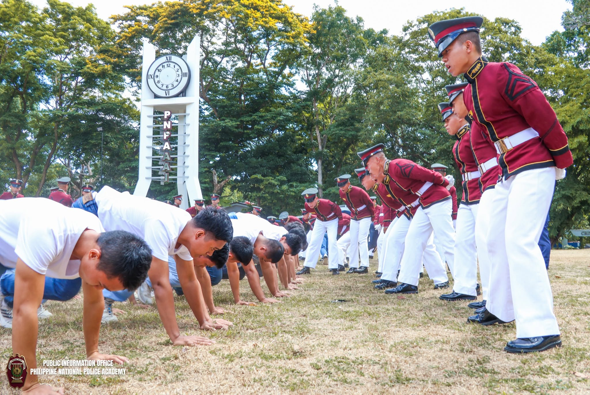
Core Values
HONOR
Truth and Integrity
Uphold truth, integrity, and ethical conduct in every action and responsibility as a future military officer.
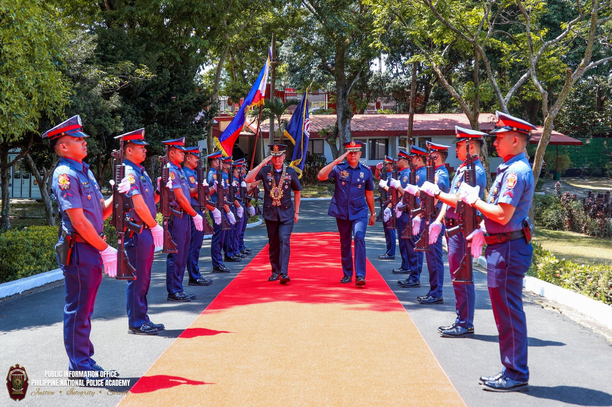
SERVICE
Selfless Service
Commit yourself to serving the country, the Armed Forces, and the Filipino people with dedication and responsibility.
PATRIOTISM
Love of Country
Demonstrate loyalty and dedication to the Philippines and a commitment to protecting the nation.
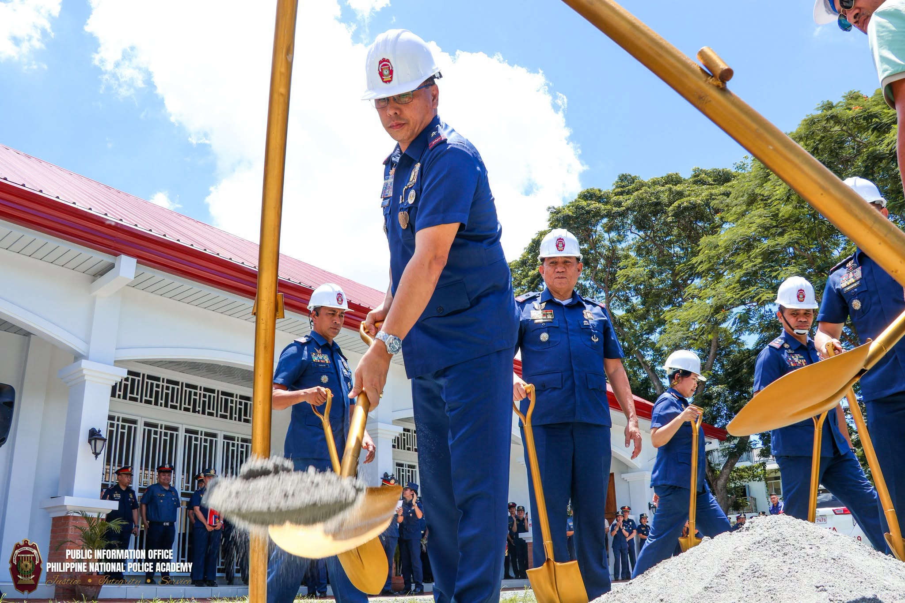
COURAGE
Strength in Responsibility
Develop the courage and resilience required to face challenges and fulfill the responsibilities of military leadership.
Preparation
REVIEW MATERIALS
Subject reviewers, topic guides, and study materials for the PMA Entrance Examination.
PRACTICE & MOCK TESTS
Practice questions and mock examinations covering Mathematics, English, and Abstract Reasoning to improve your test-taking skills.
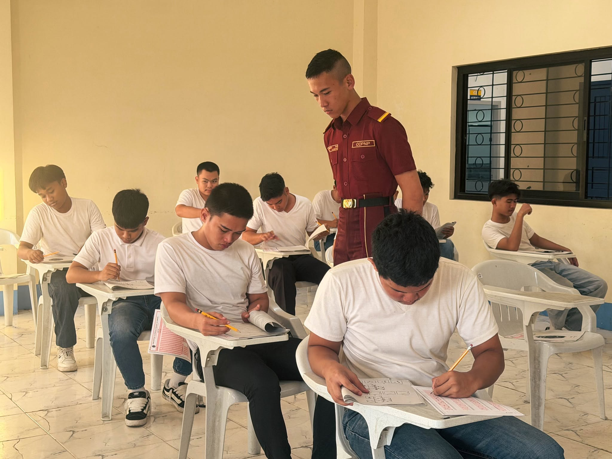
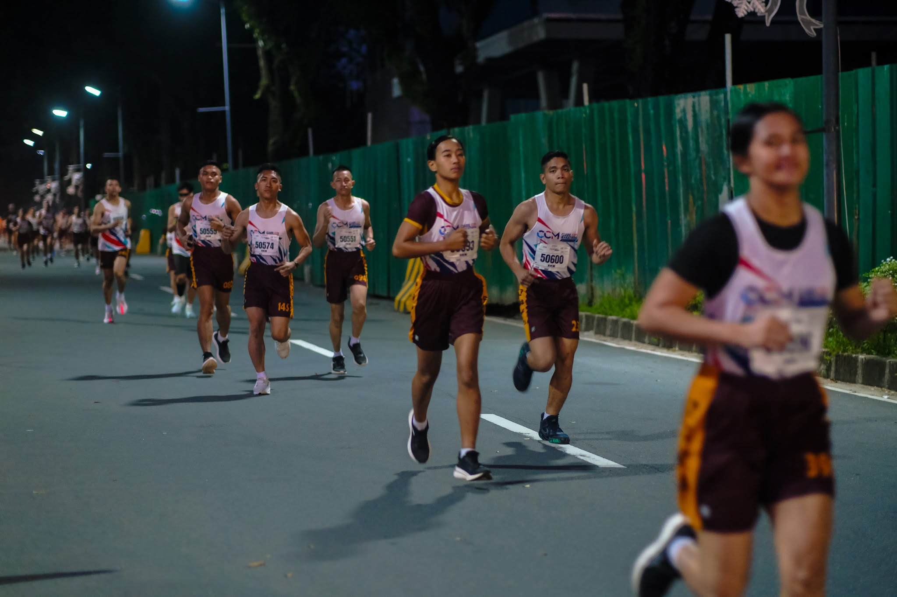
PHYSICAL PREPARATION
Workout guides, running, calisthenics, and physical preparation for the physical fitness and medical requirements of the PMA selection process.
INTERVIEW & SERVICE PREPARATION
Interview tips, communication practice, current affairs review, and guidance for presenting yourself with confidence, discipline, and integrity.